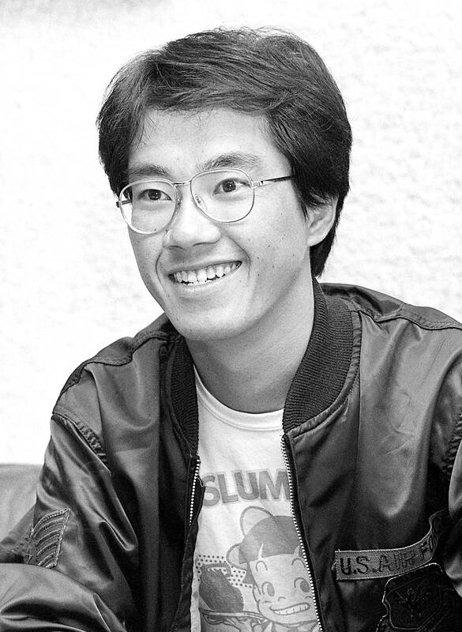

Akira Toriyama
1955 - 2024
Akira Toriyama (April 5, 1955 – March 1, 2024) was a Japanese manga
artist and character designer.

"I'm flying by the seat of my pants, never creating with a thought
to what's up ahead!"
-Akira Toriyama
Time Line
-
1955 Akira Toriyama was born in the town of Kiyosu,
Aichi Prefecture, Japan
-
1978Toriyama published first work with
Wonder Island appearing in Weekly Shōnen Jump
-
1981 Shogakukan Manga Award for best shōnen/shōjo
manga with Dr. Slump, and it went on to sell over 35 million copies
in Japan.
-
1983Toriyama publishes Dragonball predecesor
Dragon Boy
- 1984Dragon Boy evovles in Dragon Ball
- 1986Torishima recruited him to work as character
designer for the role-playing video game Dragon Quest.
-
1997 Dr. Slump is adapted as an anime series.
-
2019 Toriyama was decorated a Chevalier of the
French Ordre des Arts et des Lettres for his contributions to the
arts